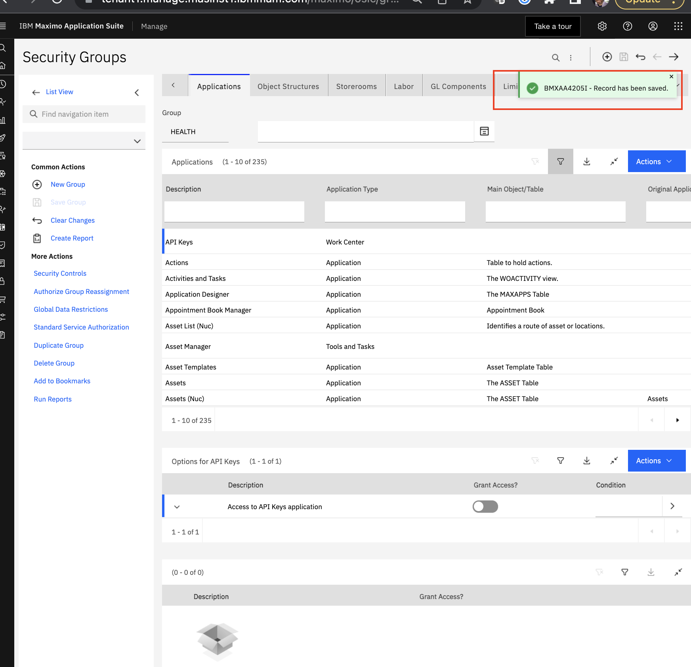

Build MAS Health and Predict Demonstration
Follow the steps in this lab in your own environment to create the necessary components to deliver the MAS v8.11 Health and Predict Demo Script. The data for your system can be provided by the instructor.
- Create group using notebooks
- Create score type
- Create group using Custom Scoring Methodology
- Create custom matrix
- Plan replacement plan template for Substation Transformers
- Create investment project
To keep track of the items that you create, append your initials to the end of the name, so that they’ll be easy to find and delete.
Prerequisites
This lab requires the following:
- A working Maximo Application Suite (MAS) environment with Maximo Manage, or another Enterprise Asset Management (EAM) system, Maximo Health, Maximo Health and Predict, IBM Maximo Models for Electrical Distribution and Maximo Optimizer installed.
- Sufficient asset data to run the analysis and get insights
- User id with application access to
Healthapplication. - User id with access to a site. Otherwise you will get a warning
This user doesn't have access to any site. Site access is required to access ASSET object
Setup Health Asset Permissions
In order to allow users to edit source record on Action button to navigate from the Health asset details page to the
Manage Asset page you must configure the Health application security groups in manage using the steps below.
- Go to Manage.

- Choose the
Security groupapplication.
- Search on the
HEALTHgroup and clickenterkey.
- Click the
Applicationstab. - Select
Assets
- Click the
Grant listed options for the application - Enable options for asset actions
- Click
Save Group.  - Go back to
Healthapplication and login using the user to ensure the operation is now possible.
Create Asset Scoring Groups using Notebooks
Navigate to Health
Launch Health on the Applications tab. If Health tile is not present on applications tab, ask your MAS admin has to enable it.
- After you login using the credentials provided by your instructor, navigate to the
- From the main MAS page, select the
Applicationstab
- Click the
Launchlink on theHealthorPredicttile - This displays the assets grid page with a table of assets and their health scores for the user's currently assigned site.

**Note if the user isn't assigned to a site they will not see any assets. **
Scoring Settings
On the main screen, there is a universal view of all managed assets in a familiar table view.
Scores that are shown in this view, and others, are created from the Scoring and DGA settings section on the left nav bar.
-
Hover over the left nav bar to expand it

-
Select the
Scoring and DGA settingssection on the left nav bar
Create a Scoring Group
Creating a scoring group (i.e. grouping common assets together) is the first step to creating scores.
If there are any scoring groups already created, they will appear on the Groups tab of the Scoring and DGA settings page.
- Scroll through the pages to see what groups have already been created.

There are 2 ways to develop scoring methodologies in Maximo Health and Predict – Utilities
The first way is to develop the scoring methodology in a Jupyter notebook. For many assets in the Transmission and Distribution space (T&D), IBM provides notebooks with prescribed scoring methodologies.
Alternatively, scoring methodologies can be created from scratch directly in the UI.
Create a Scoring Group
To create a score group for Substation Transformers, click the Create a scoring and DGA group button, and complete the form.
- Click the
Create a scoring and DGA groupbutton.
- Complete the open fields for
NameandDescription. - Select the radio button for
assetto identify theObject. - Select the radio button
Connecting group to notebookin response toConfigure scoring and DGA by. - Click
Selectto pick a notebook.
- When prompted, scroll and select the
IBM Transformers Tap Changers DGA 6.0.1. - Click
Use notebook.
Pick a Query
Complete the group by using a query to identify the assets in the group. In this case, substation transformers.
- Click
selectto pick a query.
- When prompted, scroll and select the
EUORG1_EUDEMO_ST - Click
Apply
- Click
Create
Activate Score
Once created, the group will display. The next step is to activate each of the scoring methodologies from the notebook.
- Click each score in sequence, starting at the top.

- On each
scorescreen, review the scoring methodology, and selectActive.
- Use the breadcrumb to return the
Scoring Grouppage. - Ensure that all of the scores are
Active.
Create Score Type
Score Types
To create a custom score methodology from the UI, return to the Scoring and DGA settings page by clicking the breadcrumb at the top of the page.
Select the Score types tab on the page to create a new score type. Existing score types will display on the page.
- Click the
Scoring and DGA settingsbreadcrumb at the top of the page.
- Select the
Score typestab.
- Click the
Create new score typebutton.
Create a New Score Type
Complete the form for the new custom score type. The score type can be customized with new ranges, colors and icons.
- Complete the open fields for
NameandDescription. - Leave the remaining fields as they default.
- Click
Save.

- Return to the
Groupstab to set up the custom score methodology. Select theGroupstab.
Create Group Using Custom Scoring Methodology
Create a Scoring Group
Follow similar steps as those using the notebook to create a custom score methodology for substation transformers in this case, a proxy for efficiency.
- Click the
Create a scoring and DGA groupbutton. - Complete the open fields for
NameandDescription. - Select the radio button for
assetto identify theObject. - Select the radio button
Building scoresin response toConfigure scoring and DGA by. - Click
selectto pick a query.
- When prompted, scroll and select the
EUORG1_EUDEMO_ST. - Click
Apply. - Click
Create.
Add Score Type
Once created, the group will display. The next step is to create the custom score methodology itself.
When adding a score type, existing score types with appear, including the Substation Efficiency just created.
- Click the
Add scorebutton.
- Select
Substation Efficiencyfrom the score options. - Click
Done.
Add Contributor
From the Substation Efficiency score page, the custom score methodology can be built using various contributors, formulas, or groups.
- Click the
+in the contributor section of the page.
- From the
Add a contributorpopup, select the tileFACAGESAMPLE. - Click
Add.
Add Contributor Weight
For this example, only one contributor is used, but often there will be several contributors. Therefore, a weight must be assigned to each contributor. In this case, 100%.
Value: The ability to create custom scores, with any data available, allows the user to account for unique operating environments and conditions.
- Click the
Pencilicon.

- In the popup, change the % weight to
100. - Click
Save.
- Change the
Activebutton toYes.

Create Custom Matrix
View Matrix
Now that the score methodologies are built, and active, scores will appear in multiple views.
To use the custom score in a matrix, a custom matrix must be created.
- Hover over the left nav bar to expand it.

- Select the
Assetssection on the left nav bar to return to the table view. - Click the
Matrixicon to move to the matrix view.
Configure Matrix
To customize the matrix, click the setting icon in the upper right of the screen. Adjust the fields so that Health
appears on the y-axis, and Substation Transformer Efficiency on the x-axis.
- Click the
cogsymbol.

- In the
Namefield, typeSubstation Efficiency and Health. - In the
Y-axisfield, selectSubstation Efficiency. - Select the
100-0radio button underY-axis direction. - In the
X-axisfield, selectHealth. - Select the
100-0radio button underX-axis direction.
Also, fill in the colors of the matrix so that the assets with poor health and poor efficiency appear red or high in the upper right corner.
- Click
Highradio button.

- In the Matrix, click on the upper right box to turn it red.

- Continue with
MediumandLowto complete the matrix view to match the example.
- Click
Save asto save the matrix and set it as the default.
Create Replacement Plan Template for Substation Transformers
Replacement Plan Templates
The matrix provides a good view from which to select assets for an investment project. However, a plan template must be complete for any asset class in a project. To set up a plan template, go to the Asset investment optimizer tab.
- Hover over the left nav bar to expand it.
- Select the
Asset investment optimizersection on the left nav bar.
- Click the
Plan templatestab.
- On the
Plan templatestab, click the+symbol to create a new plan template.
Create a Template
Complete the form for the replacement plan template.
- Select
SUBSTATION_TRANSFORMERfrom the selection list. Note if there is already a replacement plan template for an asset class, a new one cannot be created - In the open field, type
Sample replacement plan template for Substation Transformer - Select
ReplacementforPlan type. - Enter
8forExpected downtime in hours. - Enter
50000forEstimated capital cost. - Enter
30000forEstimated operating cost. - Enter
150000forEstimated failure cost. - Enter
30forExpected life in years. - Click
Create.
- Hover over the left nav bar to expand it.
- Select the
Assetssection on the left nav bar to return to the matrix view.
Create Investment Project
Assign Assets
To assign a set of substation transformers to an investment project from the matrix page, filter the assets, and
drill down to the table view and add assets to a project.
- Use the pulldown, and select
Substation Transformers (shared)from the list.
- Select the
redbox in the matrix to show the table view of the assets.
- From the table view, select
50from the pulldown at the bottom of the table. - Select the
boxat the top of the page to select all of the assets on the table.
- Select
Create investment project.
Create a Project
Complete the form on the Create a project page.
- In the open field, type
ST Demo Project. - In the Summary field, type
Demo project for Substation Transformers. - Enter
25forDuration in years. - Select
2QforTarget start quarter. - Enter
2023forTarget start year. - Click
Create
- Once the
ST Demo Projectpage appears, hover over the left nav bar to expand it. - Select the
Assetssection on the left nav bar to return to the matrix view to add more assets to the project.
Add Assets from the Matrix
From the matrix view, drill down once more to the table view and add additional assets to the project.
- Select the
yellowbox in the middle top row of the matrix to show the table view of the assets.
- From the table view, select
50from the pull down at the bottom of the table. - Select the
boxat the top of the page to select all the assets on the table.
- Select
Add to investment project.
From the popup, select the ST Demo Project to add the new set of assets to the existing project.
- Select
ST Demo Projectfrom the set of projects.
- Click
Add - From the
Edit projectpage, clickSave.
- Click
Savefrom theConfirm savepopup.
Create and Run Investment Strategies
To test different investment strategies, move to the Asset investment optimizer tab to create the first strategy
Maintain risk.
- Hover over the left nav bar to expand it.
- Select the
Asset investment optimizersection on the left nav bar. - From the
Projectstab, click onST Demo Project.
- Click the
+to create the first strategy.
- From the popup, make sure the
Strategyselection isMaintain risk, the clickCreate.
Once the strategy is created, run the analysis. It may take some time to complete. The user can leave the screen and the analysis will continue to run.
- Click
Run analysis
Create the second investment strategy Reduce risk and run it.
- Click the
+to create the second strategy.
- From the popup, set the
Strategyselection isReduce risk. - Set the
Target risk scoreto7. - Click
Create.
- Click
Run Analysis.
Create the third investment strategy Stay in budget and run it.
- Click the
+to create the third strategy.
- From the popup, set the
Strategyselection isStay in budget. - Set the
Opexto810000. - Set the
Capexto1350000. - Click
Create.
- Click
Run Analysis.
Summary
Congratulations. You now have completed the MAS v8.11 Health and Predict Demo setup lab and are ready to demo.